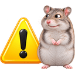

GET /repo/beta/ - Beta download page link
Not verified live- Request
- GET
http://bts.box.chomikuj.pl/repo/beta/Update infrastructure host (
%1= base.ini domain).
- GET
- operationId
openBetaRepository- Tags
- Infrastructure
- Verification
- Not verified live
unverified - Security
- none
- Raw spec
api/chomikbox.openapi.yaml,api/chomikbox.openapi.json(canonical, strict);api/chomikbox.per-operation.openapi.yaml,api/chomikbox.per-operation.openapi.json(per-operation view); this page is generated fromapi/chomikbox.per-operation.openapi.json
Description - GET /repo/beta/
Not verified live. Link "download beta version" shown in the UI (http://bts.box.%1/repo/beta/), opened in the browser. It is a web page, not part of the automatic update flow (see getUpdateRepository).
Request - body and examples
Request messages
Whole HTTP requests captured without a body to model (x-request-examples).
Derived from client behaviour (not captured live) request derived derived-from-client
Request line built from the URL string in the client; headers beyond Host not recorded.
GET /repo/beta/ HTTP/1.1
Host: bts.box.chomikuj.plResponses - 404
404
Gone (reachability check: 404).
Schema text/html
Body: string
HTML page (not recorded; see the example digests).
Response messages (1)
Derived from client behaviour (not captured live) response 404 derived derived-from-client
Status reported by a reachability check (2026-10-24); headers and body were not recorded.
HTTP/1.1 404 Not FoundClient vs live - discrepancies
None recorded for this operation. The document-wide register is on the API overview.

Security notes - findings that concern GET /repo/beta/
- C-07 Updates come over plain HTTP and are applied with administrator rights, protected only by an unauthenticated hash: each package is checked by SHA-1 against the
sha1attribute ofpackages.xml, which comes over the same channel without any verification (no signature, no key; a mismatch is called "Signature error"), andinstaller.exeruns package commands without any prior check. Anyone who can alter the traffic (hostile network, DNS, proxy) can supply a matching manifest and package that runs elevated. The repository answered 404/403 on 2026-10-24, but a network attacker does not need the real server.
From x-security-notes in the spec. Ratings and scope are explained on Security & privacy.
Verification - how this was checked
Verification: Not verified live.